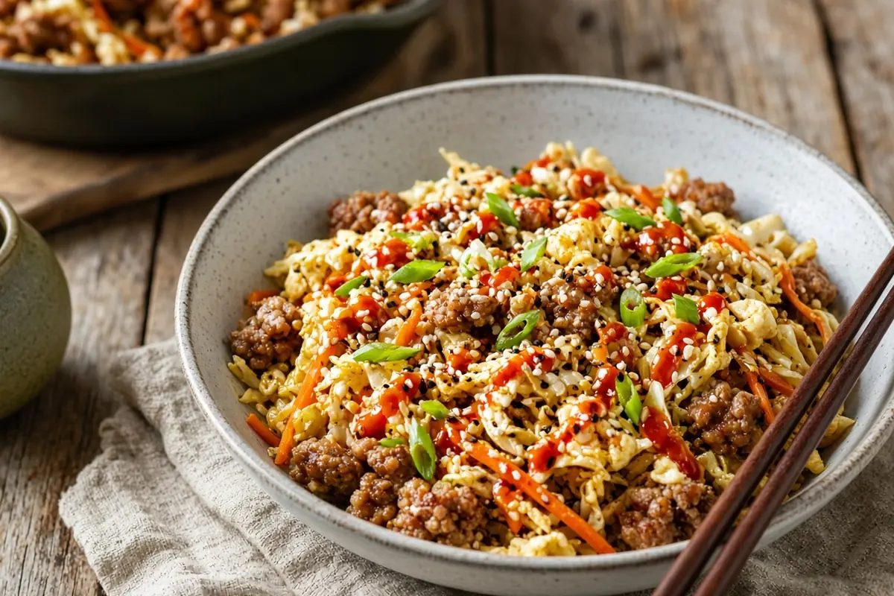

Egg Roll in a Bowl
All the flavor of an egg roll without the wrapper: ground pork, garlic, ginger, and coleslaw mix stir-fried with soy sauce, a scrambled egg, sesame oil, and sriracha.

Adapted from the-girl-who-ate-everything.com
4 servings
By
Yield: 4 servings
Prep:
Cook:
Total:
Difficulty: Easy
Ingredients
- 1 lb ground pork (or beef or turkey)
- 4 cloves garlic, minced
- 1 Tbsp fresh ginger, minced
- 1 (14-oz) bag coleslaw mix
- 1/4 cup low-sodium soy sauce (or liquid aminos), plus more to taste
- 1 egg
- 1 Tbsp sesame oil
- 2 tsp sriracha, plus more to taste
- 2 Tbsp sliced green onions
Instructions
- Brown the ground pork in a large skillet over medium-high heat until no longer pink, about 6 minutes. Drain if it's very wet.
- Add the garlic and ginger and cook 30 seconds.
- Add the coleslaw mix and soy sauce and stir-fry 6 minutes, until the cabbage is wilted but still has some crunch. Add a splash of water if the pan gets dry.
- Push everything aside to make a well, crack in the egg, and scramble it over low heat until set, about 1 minute. Stir it through.
- Stir in the sriracha, drizzle with the sesame oil, and top with the green onions. Add more soy sauce or sriracha to taste.
Notes: Merged from two saved versions: the fresh garlic and ginger from one, the scrambled egg and measured sriracha from the other. Fatty ground pork gives the best flavor. Works on a Ninja SEAR/SAUTÉ setting too.